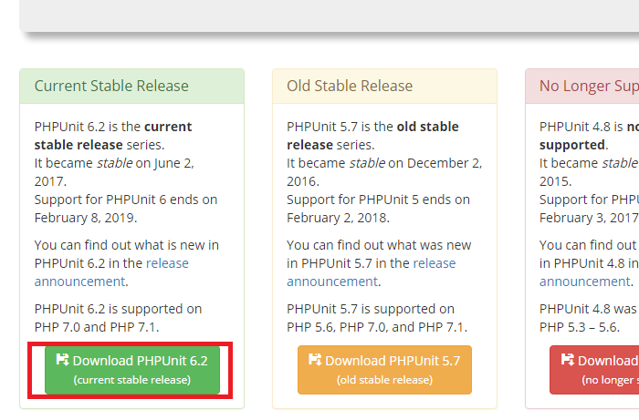

Php
개발환경(Windows)
Visual C++ 재배포 가능 패키지 설치
윈도우7에서 설치시 서비스팩1 이상이어야 설치가 된다.
Apache Server 설치
위의 사이트에 들어가서 httpd-2.x.xx-Winxx-VCxx.zip 파일을 다운로드 한다.(32, 64비트 구분) 압축을 푼 뒤에 Apache24폴더를 C:\로 이동한다. cmd창(관리자 권한)을 열고 C:\Apache24\bin 폴더로 이동하여 httpd.exe -k install 명령을 실행한다. 명령어를 실행하면 위와 같이 Windows 보안 경고 창이 뜨는데 액세스 허용을 하면 된다. 서비스 화면(services.msc)을 열어 Apache2.4를 찾아 시작하면 아파치서버가 실행된다. 브라우저에서 localhost를 확인하면 작동여부를 알 수 있다.
Php 설치
Thread Safe(MPM worker)
한 프로세스 당 여러개의 쓰레드를 사용하며 쓰레드 간 메모리를 공유 (동시접속자가 많은 사이트에 적합)
한 프로세스 당 여러개의 쓰레드를 사용하며 쓰레드 간 메모리를 공유 (동시접속자가 많은 사이트에 적합)
Non Thread Safe(MPM prefork)
한 프로세스 당 하나의 쓰레드를 사용하며 독립적인 메모리 공간을 사용하여 안정적
http://windows.php.net/download/
위의 사이트에 들어가서 원하는 버전의 Thread Safe방식(32, 64비트 확인)의 Zip파일을 받는다.한 프로세스 당 하나의 쓰레드를 사용하며 독립적인 메모리 공간을 사용하여 안정적
phpXapache2_4.dll파일이 apache2.4와 연동시 필요한데 Non Thread Safe방식에는 파일이 존재하지 않는다. 압축을 푼 뒤에 해당 파일을 위와 같이 C:\php로 이동한다. php.ini-development파일을 php.ini파일로 이름을 변경한다.
확장기능 사용을 위해 php.ini파일을 열어 extension_dir = "ext"의 앞부분 ;를 제거한다.
Apache와 Php 연동
PHPIniDir "C:/php"
LoadModule php7_module "C:/php/php7apache2_4.dll"
AddType application/x-httpd-php .php
C:\Apache24\htdocs폴더에 index.php파일을 생성하여 아래와 같이 코드를 작성 후 브라우저에서 실행하면
위와 같이 PHP정보가 출력된다.
<?=phpinfo()?>
Composer 설치
위의 사이트에서 Composer-Setup.exe파일을 다운로드 받은 뒤 설치한다.
Composer가 정상적으로 설치되었는지 확인하기 위해 cmd창을 열어 composer -version을 실행하면 버전정보가 출력된다.
Composer를 정상적으로 사용하기 위해 php.ini파일의 extension=php_openssl.dll의 앞에 ;를 삭제한 뒤 저장한다.
xdebug 설치
위의 사이트에서 현재 설치한 php버전에 맞게 파일을 다운로드 받는다.
현재 PHP7.1 Thread Safety 64bit를 설치하였으므로 해당 파일을 다운로드 받는다. 다운로드 받은 파일을 C:\php\ext폴더로 이동한다. C:\php\php.ini파일을 열어 하단에 아래의 구문을 추가한 뒤에 아파치 서버를 재실행한다.
[xDebug]
zend_extension="C:\php\ext\php_xdebug-2.5.5-7.1-vc14-x86_64.dll"
xdebug.remote_enable=true
xdebug.remote_host=127.0.0.1
xdebug.remote_port=9000
xdebug.remote_handler=dbgp
위와 같이 xdebug항목을 확인할 수 있다.
PHPUNIT 설치
 위의 사이트에서 Current Stable버전을 다운로드 받는다. C:\bin폴더를 생성하여 다운로드 받은 파일을 이동한다.
 cmd창을 열어 echo @php "%~dp0phpunit-6.2.3.phar" %* > phpunit.cmd 명령을 실행한다.
정상적으로 실행되면 phpunit.cmd파일이 생성된다. 해당 파일을 전역적으로 사용하려면 환경설정에 C:\bin폴더 PATH를 잡아주면 된다.
cmd창을 열어 echo @php "%~dp0phpunit-6.2.3.phar" %* > phpunit.cmd 명령을 실행한다.
정상적으로 실행되면 phpunit.cmd파일이 생성된다. 해당 파일을 전역적으로 사용하려면 환경설정에 C:\bin폴더 PATH를 잡아주면 된다.